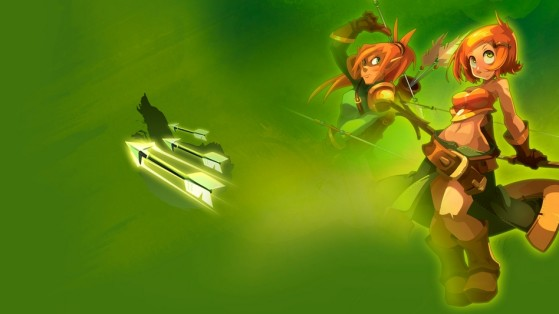

Réveillez le Iop enragé sommeillant en vous !

Venez découvrir le nouvel événement visant à farmer les iops. Nul
besoin de réfléchir, seulement se montrer plus malins qu'eux
N'hésitez pas à taper le Iop colossal !
Un Iop particulièrement retors apparaîtra à certaines heures, ne le
manquez pas! Celui-ci se montrera particulièrement généreux si vous
parvenez à lui offrir un combat qui le distraira!
Les Cras débarquent !

Venez essayer la nouvelle classe distance du jeu! Vous en avez marre
de l'épée et du bouclier, passez à la gatling... ou plutôt à l'arc
dans un premier temps.
Nouveau gameplay et approche plus riche !
Le temps des Iop et autres bourrins en mêlée est révolu! A l'aide
flèches surpruissantes assassiner vos ennemis en restant à l'abri
des coups avec des flèches dévastatrices. De plus cette classe vient
avec davantage de contenu !
Owi Ankor a encore frappé !

Owi Ankor est de retour pour vous jouer un mauvais tour ! Lors de
son dernier aussaut, Owi Ankor a mis un désordre sans nom. Quoiqu'il
arrive, cet apôtre du Dieu Osamodas ne doit pas rejoindre son
temple.
Evenement de groupe !
Venez profiter de l'occasion que vous offre Owi Ankor et arrêtez-la
avant qu'elle ne puisse rendre hommage à son Dieu! Une montagne de
loots et d'item seront obtenable si jamais ce boss est vaincu avant
d'accomplir son devoir !